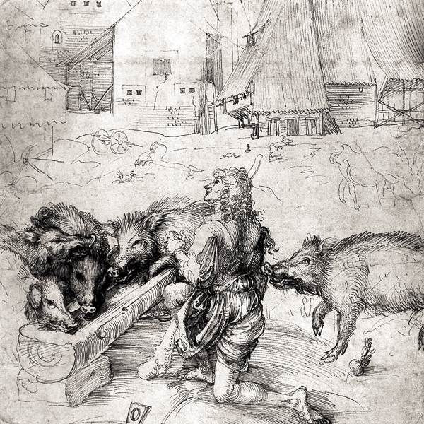

The Gospel of Luke, often referred to as the Third Gospel because of its position in the NT, contains some of the most influential and best remembered of all of the parables, including the prodigal son and the good Samaritan. When compared to the other NT Gospels, though, Luke is most noted for its narrative of the birth of Jesus (chs. 1–2), the lengthy “travel account” that comprises the central section of the Gospel (9:51–19:48), and its unrelenting interest in the marginalized and dispossessed. Additionally, as a comparison of the prefaces to both books suggests, Luke’s Gospel and the Acts of the Apostles are closely related to each other (Luke 1:1–4; Acts 1:1–2). Luke is the only Evangelist who regarded the story of Jesus as somehow incomplete without its continuation in the life of the community and mission of Jesus’ followers.
Luke’s message is fundamentally oriented around the theme of salvation — its derivation, scope, and embodiment. Within the conflicted world of the first-century Mediterranean, views of the divine purpose like that sponsored in Luke-Acts — views that run roughshod over important social conventions related to one’s honor and status in the community and one’s religious identity — would naturally have been the source of controversy and uncertainty. This is especially true of Luke-Acts, since here we have a narrative whose aim is to present the timeline of the history of God’s people so that it must pass through (and not bypass) Jesus and his disciples. Against this backdrop, the purpose of Luke-Acts would have been to strengthen the Christian movement in the face of opposition by ensuring them in their interpretation and experience of the redemptive purpose and faithfulness of God and by calling them to continued fidelity and witness in their service of the kingdom of God. Hence, the focus of Luke-Acts is ecclesiological. It is concerned with the history and practices that define the community of God’s people, and with the invitation to participate in God’s redemptive project.
Not surprisingly, then, the Gospel of Luke is centered on God. Even if God makes few direct appearances in the Gospel, the design that governs the progression of the narrative is God’s. He is known as “God my Savior” (1:47), and he reveals his purpose in a variety of ways — through the Scriptures, through heavenly messengers, through the Holy Spirit, through his own voice, and through the divine choreography of events. The Evangelist uses a constellation of terms to express God’s design — “purpose,” “it is necessary,” “to determine,” and others. Especially in the central section of the Gospel (9:51–19:48) Jesus attempts to transform the view of God held by his followers, so that they might recognize God as their Father, whose desire is to embrace them with his gracious beneficence (e.g., 11:1–13; 12:32).
God’s will is accomplished through the Spirit-anointed ministry of Jesus (3:21–22; 4:18–19) and will be continued in Acts by means of the Spirit-empowered witness of Jesus’ followers (24:44–49). Fundamental to this mission is the appropriate interpretation of Scripture, and this interpretation is Spirit-enabled, a matter of revelation. Indeed, Jesus’ disciples are repeatedly castigated for their failure to understand the purposes of God, until Jesus “opens their minds to understand the Scriptures” (24:49). In Acts, they are able to serve as Spirit-empowered interpreters who discern correctly how to read the Scriptures as expressions of God’s ancient purpose.
Luke’s emphasis on the divine purpose serves his ecclesiological and hermeneutical interests. As the Christian community struggles with its own identity, the coherence between God’s aim and the ministry of Jesus becomes crucial. In fact, it is not too much to say that Luke’s narrative both expresses and is itself engaged in a battle of interpretation. Who understands God’s purpose? Who interprets the Scriptures faithfully? For Luke, the advent of Jesus is deeply rooted in the ancient covenant with Abraham and the promise of a Messiah in the lineage of David, and his mission is fully consonant with God’s promises and intent. This is demonstrated ultimately by the divine vindication pronounced over him in his resurrection and ascension.
If God’s aim drives the Lukan narrative forward, the main character in Luke’s first volume is Jesus. Compared with people within the narrative (whether disciples, Pharisees, or others), Luke’s own audience is fortunate in its awareness, from the very beginning, of Jesus’ identity and role in God’s plan. Jesus is portrayed as a prophet, but more than a prophet: He is the long-awaited Davidic Messiah, Son of God, who fulfills his career as a regal prophet for whom death, while necessary, is not the last word. For Jesus’ disciples, then, the struggle is not so much to discern who Jesus is, but how he can be the Messiah and undergo humiliation and death. Their own views of God and the world remain conventional throughout most of the Gospel, with the result that they are unable to correlate Jesus’ status as God’s Messiah with the prospect and experience of his heinous suffering.
Early on, Jesus is identified as Savior (2:11), and this is the role he fulfills in numerous ways. Among the most visible are his miracles of healing and exorcism, together with the nature of his table fellowship. Both embody the truth of the inbreaking kingdom of God, demonstrating how Jesus reads the progression of time backward, so to speak: The future is breaking into the present, so it is the future realization of God’s purpose that must determine one’s commitments and practices today. Jesus heals those who, on account of their maladies, live on the margins of their communities. His table companions are not carefully chosen to maintain and broadcast his status in the wider world; rather, he eats with toll collectors and sinners (e.g., 15:1–2). In all these ways, Jesus communicates the presence of divine salvation for those who dwell on the peripheries of acceptable society. This is congruent with his inaugural proclamation:
“The Spirit of the Lord is upon me!
He has anointed me!
He has sent me to proclaim good news to outcasts!” (4:18)
These ministry practices are also consistent with Jesus’ teaching, which occupies major sections of the Gospel of Luke, especially in the lengthy narrative of Jesus’ journey to Jerusalem. What is often striking about Jesus’ instruction is its orientation toward a reconstructed vision of God and the sort of world order that might reflect this vision of God. Jesus, the Son of God, is God’s representative; his life is characterized by obedience to God, and he interprets for others God’s nature and plan and the contours of appropriate response to God’s graciousness (e.g., 9:35). Will they listen?
The call to discipleship in Luke is fundamentally an invitation for people to align themselves with Jesus’ mission and thus with God’s purpose. This means that the focus for inclusion in the community of God’s people is removed from issues of inherited status, and a premium is placed on those whose lives reflect God’s own dispositions. Genuine “children of Abraham” produce “fruits in keeping with repentance”; they “hear and obey the word,” especially in expressing openhanded mercy to those in need. Jesus calls people to live as he lives, in contrast to the competitive forms of life typical of the larger Roman world. Do good to those who hate you. Extend hospitality to those who cannot return the favor. Give without expectation of return. These are the behaviors that grow out of service in the kingdom of God. They are possible only for those whose convictions and commitments have been transformed by the goodness of God. Within the Gospel, the primary competitor for this focus is wealth — not so much money itself, but the rule of money, expressed in the drive for social praise and in forms of life divorced from the least and the lost.
The Lukan narrative is concerned throughout with salvation not as a merely spiritual or primarily future matter, but as a matter that embraces life in the present. Salvation signals the restoration of the integrity of human life and the commissioning of the community of God’s people to put God’s grace into practice among themselves and toward every-widening circles of outsiders.
6.1. THE CHARACTER OF LUKE’S GOSPEL (AND ACTS)
It is the historical relationship between Luke and Acts that helps us to understand the nature of Luke’s narrative and theological enterprise. Although the Gospels of Matthew, Mark, and John all share close kinship with the Greco-Roman biographical genre, the connection of Luke to Acts suggests that the category of a bios or “life” is not entirely appropriate. This is because, although the Gospel of Luke seems especially centered on Jesus, the book of Acts cannot be squeezed into that form. In fact, in the opening of his Gospel, Luke locates his work alongside other “narratives,” and the chief prototypes of “narrative” in antiquity were the historical accounts written by Herodotus and Thucydides. Moreover, Luke notes in his preface that his concern is not with a “person” or persons, but with events, and this again encourages a reading of his work in the context of historiography.
The opening of Luke’s Gospel (1:1–4) is thus reminiscent of historical narratives, but there is a great deal more evidence that points toward the identification of Luke and Acts together as historiography. Genealogical records (see 3:23–38), meals as scenes for instruction (e.g., 5:27–39; 14:1–24; 22:14–38), travel narratives (9:51–19:48), speeches, and dramatic episodes such as Jesus’ rejection at Nazareth (4:16–30) — these are the stuff of historiography.
Forms of literature are not naive containers, but are important at an interpretive level, and this is certainly true of the identification of Luke and Acts with historiography. Most immediately, it suggests something about the purpose of Luke’s writing.
If Luke-Acts belongs to the genre of historiography, this does not mean that Luke is concerned primarily to represent to his audience “what actually happened.” Historical writing in general has a broader set of purposes than recording events in the form of a chronicle. With historiography, four interrelated benefits of the past are put forward: validation, continuity, identity, and pedagogy. In Roman antiquity age was a powerful criterion for legitimating beliefs and practices, even peoples. This bias, together with the longstanding Jewish interest in the revelatory significance of historical events, emphasizes the importance of historical knowledge within first-century Judaism. When Josephus set out to legitimate Judaism and the Jewish people in the Roman world, he did so by narrating The Antiquities of the Jews. “We are very old” was an important consideration in self-presentation. According to some Hellenistic Jewish historians, Judaism was a force to be reckoned with in part because of Abraham — a man of noble birth and piety, to whom Phoenician astrology, Chaldean science, and even the discovery of the alphabet could be traced. Within the Gospel of Luke, Jesus himself asserts that “the old is good,” and in doing so denounces his opponents as peddlers of “new wine,” in contrast to the ancient purpose of God, which is being actualized in his ministry. “After drinking old wine,” he says, “no one desires new” (5:39). Similarly, in the Acts of the Apostles, Luke follows the practice of Hellenistic writers of history in narrating the reenactment of significant events to show that the story of the early church has been written into the story of Jesus, the story of Jesus into the story of Israel, and all three into the story of God’s ancient purpose for his people. The result is a continuous, almost seamless story of the articulation and realization of God’s plan.
As historiography, then, Luke’s narrative draws a continuous line from the Scriptures of Israel into the birth, life, death, and resurrection of Jesus, and from Jesus into the fledgling community of Christian believers. By this means, Luke gives the Christian community continuity with Israel of old, identity with God’s purpose, and validation as God’s people. Luke thus teaches his audience who they are and how they are to live out the substance of their faith in discipleship.
How is this continuity expressed? In the narrative of Jesus’ birth (1:5–2:52), for example, the birth of Jesus is wrapped dramatically in the cloth of Israel’s hopes and woven with the threads of scriptural idiom through the Songs of Mary, Zechariah, and Simeon. Undoubtedly, God’s promises to Abraham are being actualized in the conception and birth of Jesus, and God’s promises to David regarding the everlasting throne are coming to fruition in the conception and birth of Jesus. These conclusions are inescapable because they are presented by reliable spokespersons — the angel Gabriel as well as women and men whose piety is irreproachable and who speak under the inspiration of the Holy Spirit — and because they are deeply rooted in the Scriptures of Israel. Already at its beginning, then, the Lukan narrative is inscribed into the past story of God’s promises to Israel and his activity on behalf of his people.
Throughout the Gospel, similarly, Jesus is portrayed in garb that identifies him with Israel’s heroes — especially Moses, but also the prophets Elijah and Elisha. What is more, he articulates his own sense of divine mission in words borrowed from the prophet Isaiah (Luke 4:16–30). In the same way, Jesus’ witnesses are portrayed in Acts in ways that tie their identities and ministries into his. Like Jesus, Peter, Paul, and others work “signs and wonders.” Like Jesus, they heal the sick and proclaim the good news. Luke’s account of the death of Stephen includes powerful reminders of the death of Jesus, including Stephen’s final utterances, “Lord Jesus, receive my spirit,” and “Lord, do not hold this sin against them” (Acts 7:59–60; cf. Luke 23:34, 46). Throughout Acts, the mission is directed by Jesus, who pours out the Holy Spirit on those who believe. Luke is thus concerned to demonstrate that the story of the early church is of the same fabric as the story of Jesus, and both are nothing less than the continuation of the story of Israel and the realization of God’s redemptive will.
The importance of Luke’s achievement is heightened when it is placed within the context of Judaism in the Roman period. Given the diversity of Jewish communities at the time, it is self-evident that the one story of Israel was capable of spawning many narratives — that is, many ways to represent the continuation of that story. Within this cultural and religious diversity, Luke stakes an ambitious and provocative claim — namely, that God’s promises come to fruition here, God’s purpose for Israel is realized here, in the advent of Jesus and the missionary church. In order to make this claim, Luke’s narrative must be concerned with far more than recounting selected events; he must demonstrate their significance and interpret them against the horizons of Israel’s past, Israel’s Scriptures, and Israel’s hopes.
Our discussion of the message and character of the Gospel of Luke has proceeded thus far on the assumption that Luke and Acts in some sense comprise a unity. We may understand this “unity” in several ways. First, especially on the basis of the prefaces (Luke 1:1–4; Acts 1:1–2), practically everyone agrees that the Gospel of Luke and the Acts of the Apostles were written by the same person. These two books share authorial unity, therefore, making the writings of this author the single largest contribution to the NT (28% of the whole). But who is the author? Like the other NT narratives, Luke and Acts are unsigned documents and come to us anonymously. The oldest Greek manuscript of the Gospel of Luke (Papyrus Bodmer XIV, known as P75), dating from ca. 200 CE, uses the title, “Gospel according to Luke.” This, together with other witnesses from the second century, indicates how quickly the name was attached to these books in the tradition.
“Luke” appears three times in the NT (Col 4:14; Phlm 24; 2 Tim 4:11), with reference to a companion of Paul who is thus traditionally identified as the author of Luke and Acts. Assuming that these texts refer to the same person, they suggest a person of considerable stature in the Christian mission, a missionary colleague (and not an assistant) of Paul, who was either a Gentile or at least a non-Jewish Semite. Colossians refers to him as “beloved physician,” and this indicates that Luke was not one of the quacks known to take advantage of a naive public but was in fact respected for his knowledge and skill in the healing profession. The portrait of Luke as a sometime companion of Paul, though neither a constant travel partner nor a disciple of Paul, is congruent with the evidence of Acts 16:10–17; 20:5–21:18; 27–28; these are the “we-passages,” in which the narrator presents himself as a participant in segments of the Pauline mission. There is little reason to reject the traditional identification of Luke as the author of these two books, though in the end, because we know next to nothing about him, this identification helps us little in our reading and interpretation of either the Gospel or the Acts.
Discussion of the issue of authorship raises also the question of audience: To whom was Luke writing? Luke dedicated his work to Theophilus (Luke 1:3), and this has led some to assume that Theophilus either was Luke’s audience or that he was representative of the audience Luke hoped to reach. In Roman antiquity, however, “patron” and “audience” cannot be equated. Without printing presses and a well-developed book market, “publishing” occurred when an author allowed his book to be copied and circulated by others. The business of patrons, then, was to introduce a book to their network of friends so that the book might gain a wider hearing. The quest for the historical Theophilus, then, is a blind alley in the search for Luke’s audience.
In fact, study of Luke has failed to achieve anything approaching a consensus regarding the identity of a particular audience (i.e., a certain community, or persons located in a particular city or region of the Roman Empire) for the Gospel and Acts. Most assume that these books were written primarily for Christians (i.e., they have an ecclesiological focus more than an evangelistic one) throughout the empire.
One can speak of the unity of Luke and Acts in terms other than authorship. For example, one can think also of narrative unity and theological unity. Since Aristotle, “narrative” has been understood primarily in terms of temporal sequence and aim. Simply stated, a narrative must have a beginning, a middle, and an end, with the progression from one narrative stage to the next guided by a particular objective or end. In the case of Luke and Acts, narrative aim is expressed in (1) the orientation of the opening chapters of the Gospel around the dawning of salvation and (2) the opposition that the agents of this salvation, John the Baptist and Jesus, encounter. Conflict, then, pushes the narrative forward, as we read further to discover how (or whether!) God’s aim to bring salvation in all its fullness will be realized in the midst of hostility and competing aims. Indeed, the narrative plots the alignment of its characters — John, Jesus, and their parents; people like Simeon, Anna, the disciples, and other faithful women; the crowds, the Pharisees, and the Jewish elite in Jerusalem; and others — either with God’s purpose of bringing salvation or against it. The narrative unity of Luke and Acts is grounded in the reality that Luke presents key expectations or needs early in the Gospel, including the restoration of Israel and the embrace of the Gentiles in the community of God’s people, which are not actualized in the Gospel but must wait until the book of Acts. This perspective also accounts for the interesting portrayal of the disciples in the Gospel. Mostly, they are simply “with” Jesus; never are they assigned their own defining portfolio in the service of the kingdom of God. One must wait until the opening of Acts for the disciples to come into their own, so to speak, and to understand and embrace their particular contributions to the mission of God.
If Luke and Acts share this unity, why are they separated into two volumes? This question must be answered at two levels. From a material perspective, it was simply impossible to present these two books in one volume. Luke’s Gospel, with about 19,400 words, and Acts, with about 18,400, each require a papyrus roll of some 35 feet, which was the maximum length. It is therefore interesting that these two volumes share a notable symmetry not only in relative size but also in the span of years covered (about 30 years) and in that, just as the account of Jesus’ suffering and death comprises some 25% of the Gospel, so Paul’s arrest and trials account for some 25% of Acts. Theologically, the ascension of Jesus, narrated both at the end of the Gospel and the beginning of Acts, serves as the narrative hinge and, together with Jesus’ resurrection, the theological focal point of the narrative.
Of course, Luke and Acts are not unified in the canon, but are separated by the Gospel of John. Given the forces drawing Luke and Acts together, to be read as a single narrative, the forces that divided them into separated canonical “addresses” in the New Testament must have been powerful indeed. It seems likely that those forces came from two directions at once. First, given the similarity of the Gospel of Luke to the Gospels of Matthew and Mark, this Gospel was pulled into a relationship with these other two, and we now know all three as “Synoptic Gospels” on account of their “common view.” Second, as a bridge from Gospel to Letters and from Jesus to Paul, Acts was pulled to a position after the Fourfold Gospel. From this canonical perspective, then, the Gospel of Luke is located in an interpretive relationship with the other Gospels, which together proclaim the one gospel of Jesus Christ.
6.3. THE NARRATIVE OF THE GOSPEL OF LUKE
Although some of the details might be debated, the broad strokes of the development of Luke’s narrative of Jesus’ mission are clear: a birth narrative is followed by Jesus’ mission in Galilee, which is followed by his long, meandering journey from Galilee to Jerusalem, which in turn is followed by accounts of his teaching, death, and resurrection in Jerusalem. Geography thus plays a pivotal role in the shaping of the Gospel of Luke.
6.3.1. The Prologue (1:1–4)
According to ancient handbooks, the preface of an oral speech ought to prepare the audience to be well disposed toward the oration, attentive and ready for instruction. Much the same might be said of a preface such as the one Luke has provided to his narrative. His preface is a clear attempt to locate the work within Greco-Roman literature and is reminiscent of what we find in other examples of historical writing. Luke casts himself as one of “us,” a member of the larger community of persons whose lives have been shaped by the events he will recount; he is an interested party, a member of “the people of the Way.” He calls special attention to the extent of his research and inquiry, to the order of the narrative, and to the character of his narrative as proclamation. Luke is no mere chronicler of events; rather, he is set on persuading his audience that his interpretation of recent events is reliable.
6.3.2. The Birth and Childhood of Jesus (1:5–2:52)
With 1:5, Luke actually begins his narrative, and the transition from prologue to narrative is arresting. The prologue is written in relatively refined Greek, while the birth narrative has a “biblical” feel, suggesting continuity from the LXX to the beginning of the Gospel. We abruptly depart from a more elite cultural milieu, signified by Greek preface-writing, and enter into the small-town struggles of a little-known priest and his wife and a peasant girl from Galilee. The atmosphere is permeated by the piety of Second Temple Judaism and Jewish hopes for divine intervention. The juxtaposition of these two worlds speaks to the universal significance of the events Luke will narrate. Here Luke will celebrate the pouring out of God’s love for Israel and, indeed, for all humanity. God’s promises are coming to fruition, and the birth narrative is a virtual festival of salvation.
The ruins of a third- and fourth-century synagogue in Capernaum (Werner Braun, Consulate General of Israel in New York)
Two features help to structure the narrative and give it meaning. The first is the movement from divine promise to evidence of fulfillment to responses of praise (see the table below). Viewing the birth narrative from this perspective highlights both how integral promise and fulfillment are to the beginnings of this Gospel and the essential place of these songs in the fabric of chs. 1–2. In fact, the Songs of Mary, Zechariah, and Simeon all function similarly — to stop the progression of events momentarily so that Spirit-inspired interpretations of these momentous events might be heard clearly. A sense of the miraculous intervention of God pervades the whole narrative. It is clear that God is taking the initiative to bring his redemptive purpose to fruition, and this is cause for celebration and praise.
The second feature is the point-by-point parallelism between John and Jesus that embraces the whole of these two chapters (see below). The way in which these two stories, that of John and that of Jesus, are thus interwoven indicates that these two births and these two sons belong to the one story of God’s salvation. Both births constitute “good news” (1:19; 2:10). This is not to say that John and Jesus are equals, however. For example, Luke spends almost twice as much space recounting the birth and childhood of Jesus. Again, John is “prophet of God Most High,” while Jesus is “Son of the Most High” (1:32, 76). John is central to the unveiling of the new era of salvation, but his role is one of preparing for Jesus.
| John | Event | Jesus |
| 1:5–7 | The Introduction of Parents | 1:26–27 |
| 1:8–23 | The Annunciation of Birth | 1:28–38 |
| 1:24–25 | The Mother’s Response | 1:39–56 |
| 1:57–58 | The Birth | 2:1–20 |
| 1:59–66 | Circumcision and Naming | 2:21–24 |
| 1:67–79 | Prophetic Response | 2:25–39 |
| 1:80 | The Growth of the Child | 2:40–52 |
The birth narrative also focuses our attention on Jesus’ identity, a concern that will continue in the Gospel, especially in its opening chapters. Above all else, Jesus is the Son of God. This is how Gabriel presents him to his mother in anticipation of Jesus’ birth (1:32–35), interpreting his sonship in terms borrowed from images of the Davidic Messiah. It is portentous, then, that he is conceived as “the Holy Spirit comes upon” Mary, and “the power of the Most High overshadows her,” so that God himself is responsible for Jesus’ conception (1:35). Moreover, the birth account closes with Jesus affirming as a youth that his father is none other than the God of the temple: “Did you not know that I must be in my Father’s house?” (2:49).
6.3.3. The Preparation for the Ministry of Jesus (3:1–4:13)
Just as the birth narrative moves back and forth in its focus on John and Jesus, so in this second section of the Gospel we anticipate the onset of Jesus’ ministry by learning first of John’s. John enters the scene as a prophet, and the presentation of his mission by Luke holds two concerns in dynamic tension: John (1) provokes a crisis and directs popular hopes to the coming of a messianic deliverer and (2) attracts hostility, leading inevitably to his imprisonment. 3:1–20 presents John’s public career in relation to the religio-political elite of his day and against the backdrop of Isaiah’s message of the universal reach of God’s salvation. His “good news” centers on a repentance-baptism, by which he calls on the Israelites to realign themselves with God’s purpose and to demonstrate their allegiance to God through daily conduct in keeping with God’s own concerns with justice and compassion. The new epoch has begun already with John’s ministry, with its promise of blessing and woe, and of division, and this sets the stage for the appearance of God’s agent of salvation, Jesus, the Son of God.
Central to Jesus’ preparation for ministry is his identity as Son of God and experience of the Spirit; these two are inseparable and provide the primary focus for the scene of Jesus’ baptism (3:21–22). Jesus is Son of God in consequence of his extraordinary conception. This is confirmed by God at Jesus’ baptism, then developed further in the genealogy in 3:23–38. In 3:23 Luke admits that people would think that Jesus was Joseph’s son, whereas the genealogical record indicates that Jesus is actually God’s Son. This clash over Jesus’ identity helps to shape the narrative as it unfolds, as people repeatedly act on the basis of an erroneous understanding of who Jesus is and therefore misconstrue the significance of his presence among them.
First, however, Jesus’ sonship becomes the basis for his encounter with the devil in the wilderness. “If you are the Son of God,” the devil says, admitting that Jesus is in fact God’s Son (the translation, “Since you are the Son of God” would be appropriate), but debating with Jesus on the significance of that designation. Jesus, “full of the Holy Spirit,” defines his identity in terms of Israel’s experience in the wilderness (Deuteronomy 6–8) and thus in terms of his fundamental allegiance and obedience to God. Israel was tested in the wilderness, and so is Jesus. Israel failed the test, but Jesus does not. The devil wants to distract him from God’s claims so as to redirect Jesus’ mission toward his own ends. The reality of a second, and competing, purpose is established here: Will Jesus align himself with God’s will and thus embrace fully his identity and role as Son of God? Will his life reflect the character and commitments of God? Or will Jesus adopt this diabolic aim and pervert his identity and role, making of himself a son of the devil? Empowered by the Spirit, full of the Spirit, led by the Spirit, Jesus proves his fidelity in the midst of the diabolic onslaught and thus his readiness to engage in ministry publicly as God’s Son.
6.3.4. The Ministry of Jesus in Galilee (4:14–9:50)
After the first two sections of the Gospel, we have a keen sense of what we might expect of God’s gracious visitation, but thus far the narrative has been less forthcoming on how God’s purpose will be achieved. Luke 4:14–9:50, centered in the region of Galilee, articulates the pattern of ministry by which God’s aim is to be realized. First, it presents a definitive understanding of the outworking of Jesus’ sonship and empowerment by means of a publicly proclaimed missionary program (4:16–30). Following this is a litany of episodes of teaching and healing that demonstrate the character of that program in concrete terms. The call of the disciples in 5:1–11 does not yet signal the involvement of others in Jesus’ ministry, but it does portend the key role of the gathering of the people of God in Jesus’ work. Jesus’ message occasions discipleship, but also attracts hostility. Clearly, Jesus’ itinerant ministry of proclamation and miraculous activity provokes a crisis leading to a division within Israel.
Jesus proclaims the good news in Galilean synagogues in 4:14–44, establishing the nature of his identity and mission as God’s Son. Often regarded as programmatic for the whole of Jesus’ ministry, his sermon in Nazareth in 4:16–30 is his first public address. Indeed, although, as 4:16 reads, it was Jesus’ custom to read the Scriptures and to teach in the synagogue on the Sabbath, this is the only occasion on which Luke records the content of that teaching; this suggests that Jesus’ message in 4:16–30 sets the tone and establishes the horizons of his preaching in other synagogues on Sabbath days. Drawing on Isa 61:1–2/58:6, Jesus interprets his ministry as the fulfillment of the eschatological Jubilee (see Leviticus 25), a dramatic cipher for the age of salvation, marked above all by the ministry of “release.” This “release” is illustrated immediately in accounts of healing and exorcism (4:31–44). Throughout the Gospel we see Luke develop this concept and experience of “release” in three ways: (1) release from diabolic power, so that people are healed (e.g., 13:10–17; cf. Acts 10:38), (2) release from the debilitating cycle of debt by which those of higher status and greater means control the lives of those without power and privilege (e.g., 6:27–36; cf. the Jubilee legislation in Leviticus 25), and (3) “release” or “forgiveness” of sins (e.g., 7:47–49). The particular recipients of this good news are “the poor” — defined throughout the Gospel by a variety of criteria: economic standing in the community, family heritage, religious purity, health, vocation, and so on. “The poor” are those whose existence is eked out on the margins of society, so that even a wealthy man like Zacchaeus can be the recipient of good news, since as a toll collector his social standing is that of an outcast, a sinner (19:1–10).
Luke 5:1–6:11 follows hard on the heels of Jesus’ announcement of the divine necessity of his engaging in an itinerant ministry (4:43–44) by recounting just such a mission. Jesus begins this segment of his ministry by calling disciples (5:1–11), who then fade into the background. In the Gospel narrative their primary vocation is to learn and to exemplify appropriate response to Jesus and his message (cf. 5:11, 28). Though Jesus pronounces that “from now on you will be catching people” (5:10), they will engage in such activity only rarely until the opening of the Acts of the Apostles.
In the calling of the disciples, Jesus demonstrates the sort of people with whom he is willing to associate. Peter is a self-professed “sinner”; others throughout this section are known similarly. In fact, a variety of maladies is intertwined with a condition of sinfulness, so that Peter’s status prepares for the larger emphasis in this section on sin, sinners, and forgiveness of sins (5:8, 13–14, 20–24, 30–32; 6:2, 7, 9). While Jesus orients his concern toward these outsiders and thus makes of them objects of God’s grace, those who are religious view Jesus with suspicion, even hostility (5:21, 30, 33; 6:2, 7, 11). As Jesus retorts, “I have come to call not the righteous but sinners to repentance” (5:32).
The disciples do reappear in the next subsection, 6:12–49, where Jesus undertakes to set before them the substance of his message. Again, discipleship is presented primarily in terms of preparation: Jesus names apostles (6:12–16), but provides them with no particular portfolio. With 6:17, he defines in constructive terms the new conditions of faith and life within the community being gathered around him. Here are the dispositions and practices that characterize and flow naturally from this new people. Remarkably, what Jesus sketches is nothing less than a frontal assault on the beliefs and actions taken for granted by the Pharisees and scribes of the previous section. Those who discriminate in their choice of table companions, those who do not fast on appropriate days, those who withhold the grace of healing on the Sabbath, those who question the offer of forgiveness — such persons will find little with which to identify in Jesus’ sermon. Indeed, Jesus’ message is one of reversal. Following God must be characterized by mercy (6:36), by inclusion of those people who formerly were not to be tolerated and restoration of them to the community of God’s people. The depth to which Jesus is willing to go is suggested by his use of the term “hypocrite” in 6:42. Although in general usage today “hypocrite” refers to those who say one thing but do another, in the LXX “hypocrite” described someone whose behaviors were not determined by God (cf. Job 34:30; 36:13; 2 Macc 6:21–25; 4 Macc 6:15–23). The use of the same term in the Roman theater for “someone acting a part” is also apropos. Jesus’ final plea not only to hear but also to do (6:46–49) strikes a chord that will recur in the Gospel and that emphasizes here the importance of living out in one’s life the character of what Jesus says in this extended sermon.
Immediately, Luke recounts episodes where the message of Jesus in ch. 6 is on full display in people’s lives (7:1–50). What is surprising, though, is the identity of those through whom this occurs. That Jesus’ ministry, which occupies center stage in this narrative unit, is characterized by compassion is no surprise (see especially 7:11–17), but it is startling to see a Gentile centurion embodying the message of Jesus by denying his worthiness and thus his authority to order Jesus into his home. It is startling to hear Jesus say of a Gentile army officer, “Not even in Israel have I found such faith” (7:9). And it is astonishing to find a woman known in the city as a sinner serve as an exemplar of authentic hospitality, a paragon of appropriate response to the gift of salvation manifest in Jesus’ ministry (7:36–50). The nature of Jesus’ ministry and the people it attracts are apparently so stunning that they raise questions for John the Baptist about whether Jesus is indeed the Messiah. John has prophesied messianic judgment, but where is it? John’s question typifies the ease with which people throughout the Gospel, failing to appreciate fully the nature of God and thus his agent of salvation, attempt to draft Jesus to their own ends or misconstrue what he is (or ought to be) about.
The little summary Luke provides in 8:1–3 introduces the major motifs that occupy the next subsection of the Gospel, 8:1–56. First is the status of Jesus as the one who broadcasts the word of God and brings salvation. The second is the active presence of diabolic activity and influence, which Jesus confronts and overcomes in his ministry. Finally, the gathering of followers is highlighted, underscoring the importance of authentic response to Jesus’ message. All three motifs are woven into Jesus’ teaching, though the emphasis falls especially on the need for genuine hearing, demonstrated in the fecundity of faithful obedience (8:8, 10, 12, 13, 14, 15, 18, 21). The devil works against authentic hearing (8:12), and the diabolic is on further display as Jesus and his followers attempt to cross the Sea of Galilee (in Jesus’ “rebuke” of the wind — cf. the metaphorical identification of the powers of nature with the demonic in the OT) and in Jesus’ encounter with the Gerasene demoniac. The superior power of Jesus is thus dramatized.
The final unit of the Galilean ministry of Jesus brings together the issue of Jesus’ identity with the question of the nature of discipleship (9:1–50). Questions about Jesus’ identity (e.g., 4:22, 36; 5:21; 7:16, 19–20, 39, 49; 8:25) now reach their acme in Herod’s questions (9:7–9) and in the pronouncements of Peter (9:18–20) and God (9:28–36). The disciples are active in a way that is unique in the Gospel thus far (9:1–6), but heightened activity provides no accurate measure of their awareness of who Jesus is. They question his ability to provide for the crowds (9:12–17) and fail miserably to grasp the correlation of advanced status before God and humiliation among people (9:21–27, 35, 37–50). Indeed, as though contemplating the significant degree to which the disciples’ beliefs and commitments have not been transformed thus far, Luke concludes that the meaning of Jesus’ destiny “was concealed from them” (9:45).
6.3.5. On the Way to Jerusalem (9:51–19:48)
With 9:51, Luke begins a fresh section of the Gospel. Previously, he has worked to establish the nature of Jesus’ messianic mission, peppering his account with illustrations of Jesus’ ministry of “release.” This is no longer the case, for Luke has no more need to establish the contours of Jesus’ identity and mission. The concerns of this new section are represented by its character as a journey. A reflection of Israel’s exodus journey, the journey Jesus takes with his followers is especially concerned with their formation as disciples. He teaches them more centrally about the character of God as the gracious Father who is ready to bestow the blessings of salvation in all its fullness to all people. Additionally, this is a journey with a destination, Jerusalem, interpreted especially as the place of divine destiny, the locus of hostility toward Jesus. Hence, the journey is characterized not only by the formation of disciples (and the standing invitation for others to associate themselves with God’s purpose as this is embodied in and proclaimed by Jesus), but also by a growing hostility that reaches its acme in Jerusalem itself. Tragically, the disciples themselves are not immune to ideas and practices that stand in opposition to Jesus’ message. Repeatedly, in fact, they are implicated in dispositions alien to the kingdom of God, and, by the end of the journey narrative, they seem almost to have disappeared from view, so fully have they failed to identify themselves with Jesus.
With the departure of Jesus and his followers for Jerusalem, Jesus makes it clear that “following” him is related to joining him in the journey and in proclaiming the kingdom of God (9:51–10:42). Disciples must hear and do the word. The stark demands of discipleship (9:51–62) are followed by the sending out of the seventy-two — a high point in the life of the disciples, who not only enjoy success in their ministry but also receive from Jesus rare insight into his person and mission (10:1–20). Although this is not the first occasion, it is perhaps the most direct; here we see that, for Luke, the prayers of Jesus are accompanied by divine revelation concerning him (cf., e.g., 3:21–22; 9:18, 28, 29). The episodes Luke recounts in this subsection also develop the importance of “welcoming” Jesus, his messengers, and his message — that is, of showing hospitality and care. Whether the would-be disciples do so is not stated (9:57–62), nor is it clear whether the Jewish lawyer responds positively to the parable in which Jesus presents a compassionate, hospitable Samaritan (10:25–37). The brief episode in 10:38–42 provides in the person of Mary a portrait of how to welcome Jesus, as well as in Martha a portrait of one whose behavior is not illustrative of one who extends the sort of welcome in which the authentic hearing of discipleship is integral.
In 11:1–13, Jesus turns a request for instruction in prayer into a lesson on the Fatherhood of God — on God’s character, but also on fidelity as dependence on God and imitation of his graciousness. This concern will resurface in 12:1–13:9, but the intervening material is taken up with escalating hostility and attempts at censure (11:14–54). The juxtaposition of these accounts drives home Luke’s portrayal of how mistaken the scribes and Pharisees are with regard to their portraits of God and, consequently, of faithful life in God’s service. Hostility presses the urgency of a decision regarding Jesus. However, as Jesus’ instruction on vigilance in the face of crisis clarifies (12:1–13:9), a decision for Jesus may well introduce one to the sort of persecution and testing that seems now to surround Jesus. Indeed, Jesus admonishes his followers to beware of the Pharisees’ hypocrisy precisely because the values they serve are not exclusive to Pharisees; those who follow Jesus are not so different from those who oppose Jesus, at least not yet.
From 13:10–17:10 on the Gospel is fundamentally concerned with the question, Who will participate in the kingdom of God? Jesus’ answers revolve around the related motifs of table fellowship, celebration with a shared meal, and the extension of hospitality. 15:1–2 makes it clear that Jesus is in the dock for his table habits. By summarizing the charges against Jesus in this way, Luke borrows from one of his most pervasive frames, that of meals. In addition to their obvious importance in the provision of food, meals serve significant social functions. In 13:22–31, presence at the end-time meal means participation in the kingdom of God. In 14:1–24, meals establish “in-group” boundaries and embody values pertaining to status and purity. In these texts, the table is an expression of kinship and dining manifests concerns for honor and acceptance. Jesus has a habit of flaunting these social and religious protocols, repeatedly eating with the “wrong” people — wrong, that is, as defined by the usual standards (e.g., 5:20–32; 7:34, 36–50; 14:1–6, 13, 21, 23; 19:1–10). Meals foster existing bonds of community, but in Luke’s portrayal Jesus uses table fellowship to establish new, unexpected bonds.
Given the social and religious importance of meals, it is not surprising that Jesus attracts hostility for his table practices. Nor is it surprising, given the flow of the Gospel of Luke thus far, that the Pharisees and scribes are the sources of that hostility. Though Luke can speak more positively of the Pharisees, when they appear with the scribes they function as antagonistic monitors of Jesus’ behavior. In this capacity, they repeatedly conclude that he has neglected God’s law and consistently oppose his ministry. On the one hand, then, Jesus’ disregard for the usual conventions regarding table companions helps to construct a people who, like the toll collectors and sinners of 15:1–2, hear and heed his message. “Let anyone who has ears to hear listen,” Jesus has just proclaimed (14:35), and immediately these social outcasts are presented as those who “listen to him” (15:1). On the other hand, this new community of Jesus’ followers raises by its very existence an unflattering and threatening voice against the attitudes and practices embraced by Jesus’ adversaries.

The prodigal and the pigs as depicted by Albrecht Dürer (British Museum)
Jesus has much to answer for, and the parables of Luke 15 are cast as his defense of the character of his entire ministry. Jesus highlights the disposition of his ministry as the necessary complement to God’s character. The positive response of toll collectors and sinners as they gather around Jesus constitutes a restoration of the lost that results in heavenly joy and calls for earthly celebration, including feasting. In welcoming such social and religious outcasts to the table, Jesus is only giving expression to the expansive grace of God. What is more, as Jesus’ teaching in ch. 16 urges, wealth is always to be used to extend hospitality to those in need; those who use wealth in this way are not behaving in any extraordinary way (17:1–10), but are simply following Moses and the prophets (16:29).
Luke 17:11–19:27 functions as a kind of “thematic summary” for the journey narrative, drawing together key motifs in Jesus’ instruction and providing a heightened need for response to his message. In a real sense, the journey up to this point has been more an “idea” than an actuality, with Luke more interested in the journey motif than in Jesus and his entourage making real progress toward Jerusalem. Now, however, the pace of the journey is quickened and Luke provides clear markers showing Jesus passing between Samaria and Galilee, approaching Jericho, and, finally, entering Jerusalem. As Jerusalem looms closer on the horizon, Jesus takes care to interpret the significance of his arrival. Contrary to some expectations, the eschatological consummation of the kingdom of God is not tied to his entry into Jerusalem. Instead, prior to the End, the Son of Man must suffer many things (17:26; 18:31–33); indeed, Jerusalem is to be the site of his passion and death. Of course, Jesus’ death is not to be the last word, and he articulates not only his resurrection but also his return with royal authority. The interlude between these last two events presents the need for faithfulness (see 18:8). Importantly, as they draw near to Jerusalem, the disciples do not comport themselves as models of fidelity. Such models are provided by a surprising list of persons: a Samaritan leper who recognizes in Jesus’ ministry the beneficence of God (17:11–17), a widow who exemplifies God’s chosen ones (18:1–8), a toll collector who humbles himself (18:9–14), little children (18:15–17), and a toll collector and sinner (19:1–10). Throughout this segment of the Gospel, the direct correlation between faithfulness and proper identification of Jesus is paramount.
With 19:28–48, Jesus arrives in Jerusalem. This momentous occasion is marked above all by Jesus’ entry into Jerusalem and attempt to reclaim the temple for its purpose in God’s plan. This means wresting it away from the temple leadership, who use it to camouflage their own injustices (cf. Jer 7:1–15). The excitement generated by Jesus’ entry into the Holy City notwithstanding, Jesus knows already the inhospitable reception he will receive, and so he pronounces prophetic judgment on the temple and city for its failure to recognize that, in his coming to its walls, God himself has drawn near with his graciousness.
6.3.6. Teaching in the Jerusalem Temple (20:1–21:38)
Jesus’ prophetic action in the temple (19:45–48) was an attempt to prepare the temple for his ministry in its precincts. His teaching engenders immediate and pervasive opposition, with conflict revolving around the question, Who has legitimate authority? The stakes are high. Even if those whom Luke mentions in this narrative unit might differ among themselves, all — chief priests, scribes, elders, Sadducees, and the Jerusalem wealthy — draw their legitimation from their relationship to the temple; hence, all are threatened by the appearance and teaching of Jesus. What is at stake is how God will be represented to the people of Israel — and, if God, then also faithfulness to God. Jesus has one view, the Jerusalem elite another. Who will sway the crowds? “The people” thus play a key role. They provide a buffer between Jesus and his opponents, so that Jesus does not go prematurely to his death; and their presence as Jesus’ audience raises the question whether Jesus will succeed in persuading Israel to embrace a portrait of God and God’s purpose that runs counter to that proffered by the temple authorities. In the end, Jesus undercuts the authority of those who use the Scripture and the temple system to tyrannize and oppress the weak of society (20:45–21:4) and forecasts the calamity and destruction that will come as the old order gives way to the new (21:5–38).
6.3.7. The Suffering and Death of Jesus (22:1–23:56)
The twin motifs of conflict and the fulfillment of God’s purpose reach their high point in this narrative unit, which, then, is inexorably linked to the first twenty-one chapters of the Gospel. Jesus is aligned with the divine aim, and with him as his supporters are his disciples and “the people” who have listened to his message and received from his ministry. On the other side are the Jerusalem elite, who are aligned with the rule of darkness, with the devil (cf. 22:53). If the Jewish leadership in Jerusalem are to have their way with Jesus, they must succeed in winning the crowd over to their side — which they do, if only for a moment. The people join the chief priests and leaders of the people in crying out for Jesus’ crucifixion, but almost immediately respond in sorrow and contrition (23:48). Even the intimacy of the band of disciples is breached, as Satan enters into Judas and Judas sides with the Jewish leadership against Jesus (22:3–6, 47–48). The Jewish leadership must also gain the partnership of the Roman leadership, Pilate in particular, and, in spite of his repeated protestations regarding Jesus’ innocence, Pilate hands him over to their will (23:23–24).
The great irony of the conflict that climaxes in this narrative section lies in the juxtaposition of these two aims: the will of God and the will of Satan. Those who oppose Jesus believe that they are serving God, yet unwittingly serve a diabolic purpose. And, given their grasp of the will of God, they do the only thing that could be done. After all, Jesus had repeatedly departed from the demands of Torah, according to their perspective, and engaged in teaching and activity in the temple that could only be labeled perverse, again from their perspective. Indeed, they present Jesus to Pilate as a false prophet, using words reminiscent of the legislation in Deuteronomy 13, and, faithful to that OT text, they call for the death penalty (see Luke 23:1–5). For his part, Jesus goes to his death in the same manner that has characterized his life — namely, in obedience to the will of his Father (cf. 22:39–46). His was the death of a prophet, but more so the death of the regal prophet, the Royal Messiah, the Righteous One who suffers unjustly, the Servant of Yahweh.
6.3.8. The Exaltation of Jesus (24:1–53)
Luke’s account of Jesus’ resurrection appearances are startling in their initial portrayal of Jesus’ followers. The empty tomb leads first to perplexity (24:4) and amazement (24:12); the testimony of the women who have seen the empty tomb and encountered the angels is met with cynicism and disbelief (24:11); the disciples on the road to Emmaus are clueless regarding the significance of Jesus’ death, astounded by reports of the empty tomb, and unable even to recognize that their traveling companion is the risen Lord (24:13–22). Disbelief and astonishment continue even in the presence of the risen Jesus (24:41). It is as if the disciples simply lack the interpretive categories for rendering recent events in a meaningful way. Indeed, the cross and empty tomb are not self-interpreting but require elucidation, and this requires the depth of insight available only to those who have had their minds opened to understand the Scriptures (24:45). Jesus’ passion is not a contradiction of his status and mission, but their fulfillment. He is the rejected prophet, the suffering Messiah, who, according to the Scriptures (when understood correctly), actualizes God’s purpose. In the same way, Jesus’ resurrection and ascension are grounded in the Scriptures; they demonstrate the validity, from God’s perspective, of the manner of Jesus’ life and the substance of his message. Again, the proclamation of repentance and forgiveness of sins to all nations — that is, the mission of Jesus’ followers who will serve as his witnesses in the book of Acts — are written in the law of Moses, the psalms, and the prophets (24:45–47).
Luke 24 thus brings closure to the Gospel of Luke, but also anticipates more, including above all the mission to all nations, but also, and intricately related, the baptism with the Holy Spirit. Jesus’ ascension, reported at the close of Luke as well as in the opening of Acts, is both the midpoint of Luke’s narrative and the guarantee of the coming realization of salvation in all its fullness to all people.
6.4. “HE HAS LIFTED UP THE LOWLY”
This line, borrowed from the Song of Mary in Luke 1:46–55, helps to focus two important issues. The first concerns faith and wealth, and Luke’s presentation of Jesus’ mission among the marginal, while the second has to do with the place of Israel in God’s plan according to the Gospel of Luke.
6.4.1. Faith and Wealth
Prominent among the several motifs serving the larger theme in Luke of advancing the purpose of God is the issue of discipleship and possessions. Jesus addresses the relation of these subjects relentlessly.
Was Jesus himself economically disadvantaged? Sentimental pictures have been painted of his lowly beginnings in a stable, as though he were homeless, but Luke more likely envisages a peasant home in which family and animals slept in one enclosed space, with the animals — and, in the overcrowded conditions of the census Luke portrays in Luke 2, Mary, Joseph, and the newborn Jesus — located on a lower level. More to the point is the sacrifice offered by Jesus’ parents in 2:24: “a pair of turtledoves or two young pigeons,” the prescribed offering for the poor (Lev 12:8). Later, Jesus is said to depend on the support of others (8:1–3). On the way to Jerusalem, Jesus says of himself that he has no place to lay his head (9:58), perhaps with reference to his lack of a home, but more clearly a warning concerning the rejection to be expected of those who follow in his footsteps.
Jesus’ dependence on the benefaction of others (8:3) rules out any picture in Luke of an ascetic Jesus who rejects outright the use of wealth. To this may be added the refrain of his participation in dinner parties sufficiently ample that he could be characterized by others as a glutton and a drunkard (7:34; cf., e.g., 7:36; 11:37; 14:1–24; 19:1–27). In fact, throughout the Gospel Jesus interacts with both peasants and the wealthy; all need God’s good news.
If wealth is not evil in and of itself, why does Jesus regard it as dangerous? What lies behind his warning that no one can serve both Mammon and God (16:13)? Why is it hard for those with wealth to enter the kingdom of God (18:24)? Why must would-be disciples give up everything (14:33)? Clearly for Luke, wealth presents itself as a temptation to prestige and security apart from God and for this reason is suspect (e.g., 12:13–21, 33–34). Two aspects of ancient Mediterranean life help us to grapple more deeply with the problems Luke addresses.
First, economic sharing was embedded in social relations. To share with someone without expectation of return was to treat them as kin, as family. Conversely, to refuse to share with others was tantamount to relating to them as though they were outside one’s community. Hence, in 18:18–23, when the rich ruler refused to sell what he had and give the proceeds to the poor, he was making not only an economic decision but a social one as well. In choosing to preserve his own wealth he distanced himself from those in need — an action that is outside the bounds of discipleship in a Gospel where God has declared his salvific purpose to be realized in raising up the lowly and filling the hungry with good things (1:52–53).
In such a context, “almsgiving” cannot be understood according to modern lexicons as “charity” or “missionary giving.” Rather, giving to the poor signified friendship with the poor. For this reason, the Pharisees and scribes are soundly reprimanded for not sharing and for acts of greed and wickedness (11:39–41; 20:46–47). For the same reason, the rich man, whose distance from the beggar Lazarus was maintained by the gate of his estate, finds himself following death in Hades (16:19–32).
Second, in insisting that giving take place in a context where one has no expectation of return, Jesus strikes at the root of one of the most prevalent models of friendship in antiquity, the patron-client relationship. In this environment, a potential patron possessed some commodity required by a client. In exchange, the client would provide appropriate expressions of honor and loyalty to the patron. The point is that, having received patronage, the client now existed in a state of obligation, of debt. The possibilities for exploitation and the exercise of controlling, coercive power are high. Jesus sets himself and his message over against this way of life, contrasting the behaviors that characterize everyday life in his world with behaviors that grow out of service in the kingdom of God. In the Sermon on the Plain (6:27–36), Jesus challenges his listeners to be God’s people, who refuse the coercive, control-dominated system of relationships characteristic of the wider world but instead give freely, without expectation of return.
This message is well summarized in the petition in Luke’s version of the Lord’s Prayer, “And forgive us our sins, for we ourselves forgive everyone indebted to us” (11:4). In this case, “debt” must be understood within the framework of patronal friendships. Consequently, Jesus is urging his followers to forgive debts — that is, to treat one another as kin, giving freely, not holding over one another obligations for praise and esteem.
Luke’s material on the rich and poor, then, is woven into a larger fabric than talk of money and treasure might at first suggest. Wealth is intricately spun together with issues of status, power, and social privilege. For this reason it cannot remain long outside the purview of the gospel. Entry into the way of discipleship raises immediately the question of possessions, with Luke calling for forms of distribution in which the needy are cared for and the wealthy give without expectation of return.
6.4.2. Israel and Luke
Finally, the question remains, Are not the Jewish people the lowly to whom Mary’s Song refers? Are they not the focus of God’s gracious visitation to bring salvation? What is the place of Israel in God’s salvation according to Luke? This is not an easy question to address, precisely because of the diversity of evidence within the Gospel. The scribes (also known as “lawyers” and “teachers of the law”) are consistently portrayed in negative terms, for example. They question and test Jesus, complain about him, look for a way to accuse and execute him, and participate in his execution (cf. 5:17, 21, 30; 6:7, 9, 22; 10:25; 15:2; 19:47; 20:19; 22:2, 66; 23:10). Likewise, the Jewish synagogue is not a welcome place for Jesus and his message, especially as the narrative unfolds. Jerusalem and especially the Jerusalem-based priesthood are portrayed in negative terms, set against the purpose of God as this is articulated in Jesus’ ministry.
On the other hand, Torah is never abrogated, even if it must always be interpreted in line with God’s ancient purpose. Faithful obedience to the law is depicted positively, as are various acts of Jewish piety, including prayer, worship, fasting, and expectant waiting. Of course, the Scriptures of Israel themselves are crucial to the narrative Luke weaves, and repeatedly we learn that Jesus’ message is continuous with the story of God and God’s people in the Old Testament.
How does one move beyond this ambiguity? Crucial in this respect is Jesus’ concern that his disciples not fall into hypocrisy — that is, that they not become like Pharisees and scribes who do not understand God’s purpose and therefore whose commitments and behavior do not reflect God’s character. Put sharply, the temple, the priesthood, and even the Scriptures of Israel must always be understood in ways congruent with God’s purpose. Failure to grasp God’s plan renders persons and institutions capable only of working at cross-purposes with God. Apart from this, they can give only the impression of piety and faithfulness. The religion of Israel — its institutions, its customs, its practices — is to be embraced fully when understood genuinely in relation to the redemptive purpose of God. But in order to be understood thus, Israel’s religion must cohere with the purpose of God as this is articulated by God’s own authorized agent of interpretation and salvation, God’s Son, Jesus of Nazareth.
FOR FURTHER READING
Darrell L. Bock, Luke, 2 vols. (Baker Exegetical Commentary on the New Testament; Grand Rapids: Baker, 1994/96)
Henry J. Cadbury, The Making of Luke-Acts (2nd ed., with a new introduction by Paul N. Anderson, Peabody: Hendrickson, 1999)
Joel B. Green, The Gospel of Luke (New International Commentary on the New Testament; Grand Rapids: Eerdmans, 1997)
———, The Theology of the Gospel of Luke (Cambridge: Cambridge University Press, 1995)
Luke Timothy Johnson, Luke (Sacra Pagina; Collegeville: Liturgical, 1991)